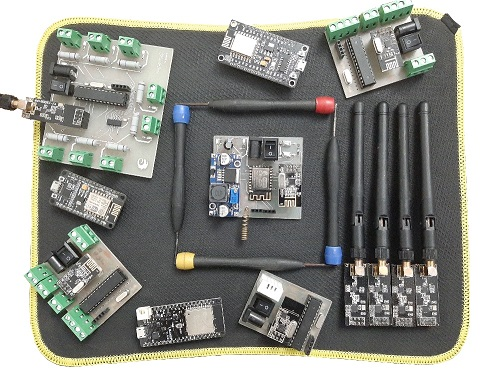
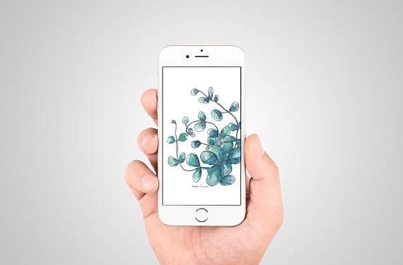

Dragon Eye
A platform for monitoring your business
Local Boards
Server Side
Android App
Dragon Eye consists of three parts, Local boards, Server side, and Android application. Local boards are placed at the user's business
location and will send data to the server. The data will be stored in the server's database. The user can view the data using the Android application. We have complete control over this process, so if any customization is needed, it is possible to do so.
Key features:
- High stability of local boards
- Ability to detect, correct and report errors
- Wireless communication between local boards
- Easy expansion
- No interference
- Using GPRS
- Using MQTT
- Displaying data in chart formats
- Customization option for displaying charts
Local Boards

The task of the local boards' section is to send data to the server. This section is divided into two parts, Gateway board, and Sensor boards. The task of the gateway part is to
send the sensor boards data to the server. The task of the sensor boards part is to send the measured data to the gateway board. Their communication is wireless. Because we divided the local boards' section into two parts and the complexity is on the
gateway's part, it's much easier to implement this platform for different businesses.
The gateway board uses the Sim800C chip and an onboard nano SimCard to connect to the internet. Because it uses 2G technology, the platform can be used in almost all cities and villages. The gateway board has been stabled in many ways and tested
over months with no problem. Furthermore, it can fix and report errors.
The sensor boards type depends on the need of the user. Till now, five types of sensor boards are designed and fabricated:
- Temperature and Humidity
- Movement detector
- Power detoctor
- MQ series gas sensor
- Sensors bank
The task of the server's section is to receive and store the data. Also, it will receive and store the weather condition of users' locations to allow them to compare these weather data with their businesses' data. Another task of the server is
to respond to the requests of android and gateway boards.
Server characteristics:
- CPU: 1 core
- RAM: 1GB
- Disk Space: 5GB
- OS: Linux 16.04
Android Application

The task of the android application is to display the data to the user. The application has Main charts and customized charts. The customized charts can display different data in a single chart. The user can set limitations on each one. Also, the user can
set the properties of charts.
Some of charts features:
- Displaying multiple datasets
- Zooming
- Data selecting
- Datasets limits displaying option
- Changable appearance
LINE COUNTS
Here is the number of lines for each programming language
Total: 8143 lines
PROGRAMS/IDES
Here are some of programs/IDEs used to develope the project
Atom
Visual Studio
Arduino IDE
Android Studio

Git
MQTT Box
Altium Designer
FileZilla
PROJECT'S GALLERY
Here are some of the images of the project
Click on the images to make them bigger